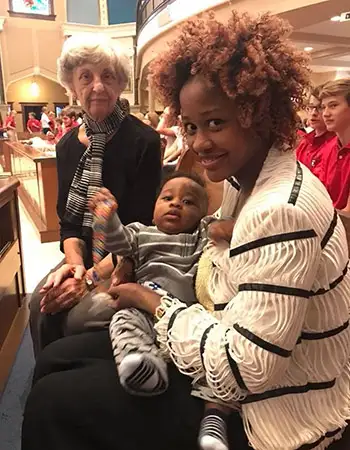

In recent years, I’ve spent the first hour of the first day back to school in the “parent section” of Sts. Anne and Joachim Church, sharing in the opening Mass for the St. John Paul II Catholic Schools Network.
This year, my heart was heavy. In the previous days, our Catholic world had been shattered with news of wayward shepherds who’d betrayed our trust and left some of the most vulnerable of the Body of Christ permanently damaged.
I was struggling mightily, like so many. As much as I wanted to somehow just gracefully leap over all the ugly, my heart remained torn and grieved.
A heaviness hung in the very air as I drove southward from my home to Mass. How can we convince our young people the Church is true and good when we’ve all been let down so horribly, I wondered?
Because of the way these stories have been clustered, the situation seems much more concentrated than it is. But in truth, it couldn’t be any worse.
As our priest, Father Paul Duchschere, had mentioned in his homily the previous weekend, learning the very pastors who’d been consuming the Eucharist, the Body and Blood of our Lord, sometimes several times a day, could be living a life so horrendously counter to Jesus Christ’s ways, leaves us all devastated and demoralized.
I began pouring out my thoughts to God, asking him to help his flock, begging healing for the victims. “Please, help me find hope, too,” I said aloud.
A few minutes later, I saw the familiar advance of red and white shirts moving from Shanley High and Sullivan Middle schools toward the church. Several cars had to stop at the entrance to let the long line pass.
At the doors, older students greeted us, smiling and welcoming us to the first-day Mass. I found my spot in the pew near a familiar face and breathed deeply. It felt good to be back in this school community, surrounded by hundreds of young people – our future.
And yet, I was still struggling. Every word of every song, while sweet, seemed to bring me back to the news. I held back tears. Everything has changed, I thought. It will never be the same – and the victims have been living this more deeply and for longer.

We cannot separate ourselves from Christ’s body, the Church. We are all part of her. When she shines, we shine; when she hurts, we all hurt.
As the Mass came to a close, our school chaplain, Father Charles LaCroix, asked us to hold tight so we could receive a special treat. What could it possibly be, I thought, unable to imagine anything that would suffice right now.
But then, after highlighting the strong pro-life teens in our school community, he introduced some guests – sidewalk advocate Lila Harmsen and a young lady – along with her baby – whom Lila had helped save from abortion several months ago.
As the trio went up to the front to be acknowledged, witnessing, in the best way imaginable, what is possible when we choose life over death, and the clapping of young people resounded, unexpected joy overwhelmed my soul.
I realized God had amply answered my prayer. He’d taken my request for hope and poured it into a large church filled with young people. He took the smile of a mother, the giggle of a four-month-old baby, the beaming of a faithful prayer warrior, and through them, reminded me – just as Father LaCroix had mentioned in his homily – that nothing is impossible with God.
[Note: I write about my experiences on the sidewalk Downtown Fargo on Wednesday, the day abortions happen at our state’s only abortion facility, for New Earth magazine — the official news publication of the Fargo Diocese. I hope you find “Sidewalk Stories” helpful in understanding the truth about abortion and how it plays out tragically each week here in Fargo, N.D. The preceding ran in New Earth’s September 2018 issue.]